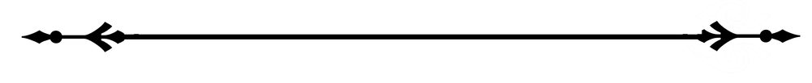
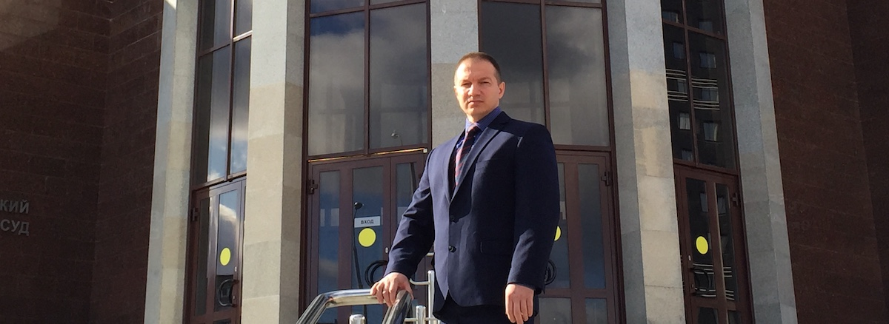

Помощь защитника в Екатеринбурге:
+7 (912) 631-20-28
В случае привлечения к ответственности, осуществить должную защиту прав и интересов подозреваемому (обвиняемому) сможет только квалифицированный адвокат. Он выяснит все обстоятельства и нюансы дела, тщательно ознакомится с материалами уголовного производства и будет контролировать его ход с самого начала расследования.
Какую помощь может оказать адвокат?
"Статья 105 УК РФ - одна из наиболее сложных для рассмотрения в суде и только опытный защитник, и грамотно выстроенная линия защиты поможет в корне изменить ход уголовного дела"
Когда нужно обращаться за консультацией к адвокату?
Чем раньше вам окажет помощь адвокат по статье 105 УК РФ тем выше шансы того, что:
Адвокат по статье 105 УК РФ должен быть вызван немедленно, как только произошло задержание, производится допрос в качестве подозреваемого или предъявляется обвинение. Более того, даже если прямых указаний на возможность обвинения нет (например, человека просто вызывают как свидетеля), правовой поддержкой адвоката заручиться необходимо.
Грамотный адвокат - Константин Янышев

Линия защиты при обвинении в убийстве
Адвокат по убийству - статье 105 УК РФ может доказывать невиновность клиента либо добиваться смягчения наказания посредством переквалификации и путем доказывания имеющих значение обстоятельств дела. Линию защиты определяет конкретная ситуация, признание или отрицание подследственным факта совершения преступления.
Если адвокат по ст. 105 УК РФ пытается переквалифицировать ее на другую статью, то он должен представить основания для изменения инкриминируемой статьи. Более мягкое наказание, в частности, предусмотрено статьями 107 УК (в состоянии аффекта), 108 (вследствие превышения пределов самообороны), 109 (по неосторожности).
Если же подзащитный не признает своей причастности к преступлению, то адвокату предстоит доказывать его невиновность. Адвокат по ст. 105 УК РФ собирает доказательства и улики, находит новых, не допрошенных следствием свидетелей, выясняет все обстоятельства случившегося.
"Адвокат - профессионал по 105 статье примет участие во всех следственных мероприятиях, грамотно защитит права доверителя на этапе дознания, разработает линию защиты и стратегию поведения."
Работа адвоката
Адвокат должен быть на шаг впереди следствия, должен работать более продуктивно и собирать максимальное число доказательств невиновности своего подзащитного. Идеально, если адвокат имеет предыдущий опыт следственной работы.
Важная задача специалиста – не допустить оказания психологического давления со стороны следствия на своего подзащитного.К сожалению, «выбитые» признательные показания и намеренное введение в заблуждение подследственных – не редкость.
Государственный адвокат
Даже если предоставленный следственными органами (и оплаченный государством) адвокат компетентен и опытен, он не заинтересован в успешном исходе дела по ст. 105 УК РФ. Отсутствие заинтересованности приводит к тому, что предоставленный следствием адвокат просто «отрабатывает» время, присутствует на следственных мероприятиях не столько для защиты, сколько для соблюдения законности процедур, которые без адвоката нельзя проводить. Как следствие, и процент успешного для обвиняемого завершения дела с предоставленными следственными органами защитниками очень мал: реально помочь сможет только адвокат, работающий по соглашению с доверителем.
Услуги адвоката по ст. 105 УК РФ понадобятся и в том случае, если близкие жертвы желают обратиться в суд с целью взыскания морального и иного вреда.
Янышев К. В. оказывает помощь в рамках досудебного и судебного производства по статье 105 УК РФ в Екатеринбурге. Звоните: +7 (912) 631-20-28.